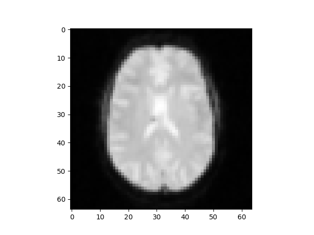
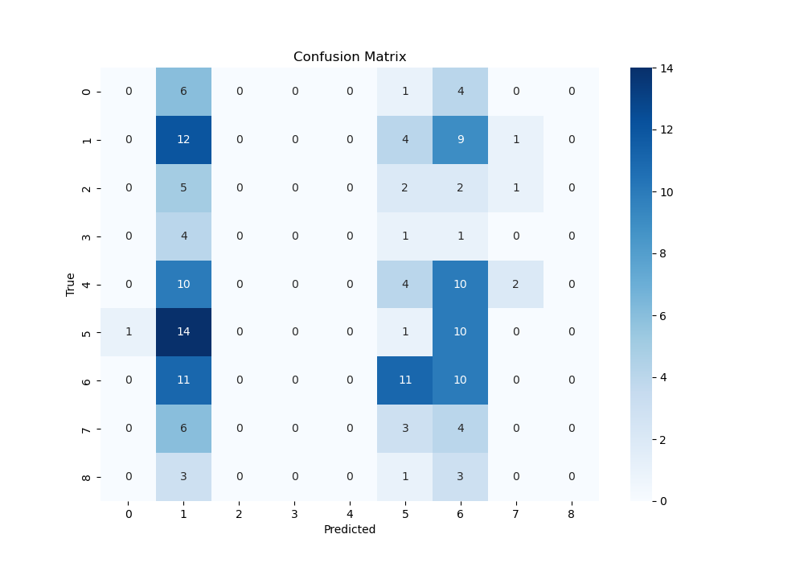
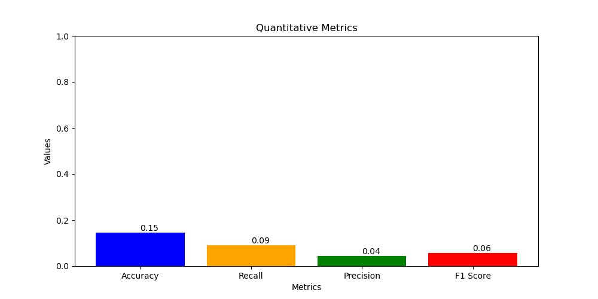

Group 7 Project Midterm Report
Group
| Name | Proposal Contributions |
|---|---|
| Yuval Mazor | Methods, Problem Definition,Model Construction |
| Ruohan Feng | Background and Data Description, Data preprocessing |
| Jianwei Jia | Potential Results and Discussion, Data preprocessing |
| Wei-Hsing Huang | Methods, Data Description, Model Construction |
Problem Definition
The following study investigates how prior knowledge and expectations influence perceptual judgments in human subjects during a discrimination task. The researchers assume prior knowledge influences perception by imposing contextual constraints on sensory inputs, which enhances the speed and accuracy of detecting stimuli (Dunovan & Wheeler, 2018). This is observed in fMRI studies on category-selective regions of the inferior temporal cortex (Tremel & Wheeler, 2015). Our aim in the current study is to use machine learning algorithms to observe if prior knowledge influences people’s decision-making in response to subsequent stimuli separately for hourse and face image.
Background and Literature Review:
The data are from a study developed by Dunovan & Wheeler (2018), which investigates the same research question but with a different approach. Previous research found indirect evidence for top-down predictions in the visual cortex, demonstrating the absence of an anticipated stimulus triggered a stronger response than seeing the anticipated stimulus itself (Kok et al., 2014). However, other studies found expected faces elicited a larger stimulus-evoked response than unexpected ones (Bell et al., 2016; Tremel et al., 2015). Thus, the current study would follow the same research questions as the previous articles and investigates if the prior expectations could enhance the response to anticipated stimuli.
Table 1
Experimental Design from Dunovan & Wheeler (2018). Each trial condition is depicted along with the breakdown of the cues in each trial.

Dataset Description
19 participants completed 600 trials (five runs of 120 trials); each run resulted in 787 medical 2D images which were converted into 3D datasets. The AFNI (Analysis of Functional Neuroimages) data is composed of two files (per trial per participant) containing the voxel numerical values, spatial characteristics of each voxel, and statistical information for each sub-brick. We will merge the files into the NIFTI file which encapsulates both metadata and the actual image data as the final dataset for machine learning in Python.
Figure 1
Experimental Design from Dunovan & Wheeler (2018). Each trial condition is depicted along with the breakdown of the cues in each trial.

Methods
We analyzed the fMRI imaging and NIFTI data corresponding to experimental metadata. The .HEAD files and .BRIK files were converted into a pre-processable form using AFNI and then merged into the existing NIFTI files using pandas.


- Unsupervised and Supervised Learning Methods proposed
- Unsupervised Learning Methods for Data Processing:
- K-Means, GMM, DBSCAN etc.
- Supervised learning method for predicting the results:
- RNN: RNNs are highly effective for processing and analyzing dynamic medical images for time series analysis.
- Transformer: Compared to RNN, transformers use a self-attention mechanism that can more effectively handle long-range dependencies, while RNNs may lose information or face vanishing gradients in long sequences.
- CNN: Even though CNNs are not the best candidate for time series analysis, they are powerful for image tasks. Therefore, we will also apply CNNs to our project and compare the performance between CNN, RNN, and transformer.
- Unsupervised Learning Methods for Data Processing:
- Data Processing Method Implemented
- 1. Using to3d, 3dvolreg, 3dToutcount and 3dmerge tools in FMRI to do the 1st processing step:
- a. To process FMRI data using AFNI, we first converted DICOM files from each run (run1 to run5) into AFNI’s BRIK/HEAD format using the to3d command,
specifying the slice timing information with the time of each scan = 1500 ms, number of images = 785, slice numbers = 29.
Next, we applied slice timing and motion correction with the 3dvolreg command,
using the -tshift -Fourier option for slice timing correction and the -base option to set the reference volume (111th image in each run) for motion correction,
while saving the motion parameters in text files.
The 3dToutcount command then computed outlier counts for each volume in the motion-corrected data,
and we used -automask to create a brain mask and -fraction to output the fraction of voxels in the mask that are outliers.
Finally, we applied spatial smoothing to the motion-corrected data with the 3dmerge command,
used the -1blur_fwhm 4 option to specify a 4mm FWHM Gaussian blur, and transfered the smoothed datasets to NIFTI file for ML data processing.
- b. Slice Timing and Motion Correction: Next, we applied slice timing and motion correction with the 3dvolreg command, using the -tshift -Fourier option for slice timing correction and the -base option to set the reference volume (111th image in each run) for motion correction, while saving the motion parameters in text files.
- Code file: CS7641_fMRI_DL/data_process_code/s8_preproc.sh
- Part of the 3D images data visualization after processing:
- 
- a. To process FMRI data using AFNI, we first converted DICOM files from each run (run1 to run5) into AFNI’s BRIK/HEAD format using the to3d command,
specifying the slice timing information with the time of each scan = 1500 ms, number of images = 785, slice numbers = 29.
Next, we applied slice timing and motion correction with the 3dvolreg command,
using the -tshift -Fourier option for slice timing correction and the -base option to set the reference volume (111th image in each run) for motion correction,
while saving the motion parameters in text files.
The 3dToutcount command then computed outlier counts for each volume in the motion-corrected data,
and we used -automask to create a brain mask and -fraction to output the fraction of voxels in the mask that are outliers.
Finally, we applied spatial smoothing to the motion-corrected data with the 3dmerge command,
used the -1blur_fwhm 4 option to specify a 4mm FWHM Gaussian blur, and transfered the smoothed datasets to NIFTI file for ML data processing.
- 2. Using K-means to do the 2nd processing step:
- K-means method:
- In total we had 64x64x29x785 data points to analyze from the images, (64x64 is for one grayscale picture, for every data point, we have 29 different these images to construct a 3D brain image, and there are total 785 data points). We used K-means to remove the background noise from these 3D brain images to get a more accurate brain region recognition for model training. Our logic was that because k-means can be used to cluster the different parts of brain, if we give it a number of clusters it can be used to remove some noise points.
First, 50 clusters were initiated and we used the K-means algorithm to recognize important structures. Second, we chose the 40% nearest points in a fixed distance region with the K clusters central points as our clusters and classified the
other points which haven't been allocated into these clusters as noise points (similar to DBSCAN). This way, we obtained a cleaner dataset and can improve our predicted results in
when training the model.
- Code file: CS7641_fMRI_DL/data_process_code/project.py
- K-means method:
- ML Algorithms/Models Implemented
- 1. Using CNN ResNet as the model to train:
-
Model Definition:
- a. Define an CNN resnet model using PyTorch’s torchvisoin.module.
- b. Include CNN layers to process 3D MRI image data and a fully connected layer to map the CNN's hidden state to 9 output classes.
- c. Use resnet18 for the CNN layer in our training, which can be replaced with LSTM or GRU to consider sequential information for better performance later for improvement.
-
Initialization:
- a. Initialize the hidden state to zeros at the start of each sequence.
- b. Set the model to use GPU if available to speed up training and inference.
-
Data Handling:
- a. Define a custom dataset class to handle 3D MRI data and corresponding labels, transforming them for CNN input.
- b. Clean and preprocess the data, ensuring it is in the correct format for CNN input.
-
Training and Validation Split:
- a. Split the dataset into training and validation sets using an 80% - 20% split ratio.
- b. Use PyTorch's DataLoader to batch and shuffle the training data, ensuring efficient data loading during training.
-
Loss Function and Optimizer:
- a. Use CrossEntropyLoss for multi-class classification.
- b. Implement the Adam optimizer with a learning rate of 0.01 and weight decay of 0.001 to avoid the overfitting.
- c. Incorporate a learning rate scheduler to dynamically adjust the learning rate during training.
-
Training Loop (using 200 epoch for training):
- For each epoch, perform:
- a. A forward pass to compute predictions.
- b. Calculate the loss using the defined loss function.
- c. Backpropagate the loss to compute gradients.
- d. Update the model parameters using the optimizer.
- Track and print training loss and accuracy to monitor performance.
- For each epoch, perform:
-
Validation Loop:
- a. Evaluate the model on the validation set without gradient computation.
- b. Calculate and print validation loss and accuracy for each epoch.
- c. The model result evaluation will be present in results and discussion chapter.
-
Model Definition:
- Code file: CS7641_fMRI_DL/data_process_code/project.py
- 1. Using CNN ResNet as the model to train:
- 1. Using to3d, 3dvolreg, 3dToutcount and 3dmerge tools in FMRI to do the 1st processing step:
Results and Discussion
- For the validation data prediction:
- 1. Draw the Confusion Matrix:
- 
- The confusion Matrix is used to see the relationship between the predict and true result in terms of 9 different picture conditions according to the brain 3D images, which means if we can predict the pictures successfully according to the brain activation.
- 2. Draw the Quantitative Metrics:
- 
- Accuracy = 0.15
- Recall = 0.09
- Precision = 0.04
- F1 score = 0.06
- Confirm what areas of the ITC are activated during the study
- See if we can predict what image was being viewed from the changes in brain activation
- Investigate the neural signals corresponding to the subjects' expectations during the pre- and post-sensory stages of decision-making
- 1. From the confusion matrix, we can see the model’s prediction performance across different categories. Key observations include:
- a. In some picture conditions, such as 0 and 1, have relatively accurate predictions with 6 and 12 correct classifications, respectively.
- b. conditions 4, 5, and 6 have significant misclassifications. For instance, 14 samples of the actual category 5 are misclassified as 1, indicating the model’s poor distinction ability for these categories.
- c. Some conditions, like 3 and 8, have very few correct classifications.
- a. In some picture conditions, such as 0 and 1, have relatively accurate predictions with 6 and 12 correct classifications, respectively.
- a. Accuracy (0.15): This low value indicates that the model correctly classifies only 15% of the samples, suggesting it often fails to predict the correct labels.
- b. Recall (0.09): A recall of 0.09 means that only 9% of the actual positive samples are correctly identified. Low recall indicates the model’s poor ability to recognize positive samples.
- c. Precision (0.04): A precision of 0.04 means that only 4% of the samples predicted as a certain category are actually of that category, indicating many false positives.
- d. F1 Score (0.06): The F1 score, which balances precision and recall, is 0.06, further demonstrating the model’s poor performance.
- 1. Data process: Use advance data process techniques to increase sample diversity, helping the model learn more robust features.
- 2. Model Adjustment: Try different model architectures or hyperparameter optimization to enhance the model’s generalization ability.
- 3. Feature Engineering: Extract more effective features or use new pre-trained models for feature extraction.
Timeline
1. Prepartion and Survey
(Project Proposal)
May 24 - June 14, 2024
Initial meeting to discuss FMRI project data access, goals, timeline, and responsibilities.
2. Data Collection and Initial Data Preprocess
June 15, 2024 - June 24, 2024
Collecting and organizing the FMRI data from various sources, using FMRI tools, K-means method to do the data process and clean.
3. Initial Model Construction and Training
(Midpoint Report)
June 25, 2024 - July 03, 2024
Using CNN (ResNet) to do the model training and validation.
4. Advanced Data Process, Model Construction and Training
July 04, 2024 - July 14, 2024
Cleaning and preprocessing the data for analysis.
5. Model Improvement and Evaluation
(Final Report)
July 15, 2024 - July 23, 2024
Training machine learning models on the preprocessed data.
Gantt Chart
References
- Bell, A. H., Summerfield, C., Morin, E. L., Malecek, N. J. & Ungerleider, L. G. Encoding of Stimulus Probability in Macaque Inferior Temporal Cortex. Curr. Biol. 1–11, https://doi.org/10.1016/j.cub.2016.07.007 (2016).
- Dunovan, K., & Wheeler, M. E. (2018). Computational and neural signatures of pre and post-sensory expectation bias in inferior temporal cortex. Scientific Reports, 8(1), 13256. https://doi.org/10.1038/s41598-018-31678-x
- Kok, P., Failing, M. F. & de Lange, F. P. Prior Expectations Evoke Stimulus Templates in the Primary VisualCortex. J. Cogn. Neurosci. 26, 194–198 (2014).
- Michel, Vincent, et al. (2011). “A Supervised Clustering Approach for Fmri-Based Inference of Brain States.” Pattern Recognition, Pergamon, https://www.sciencedirect.com/science/article/pii/S0031320311001439
- Mwangi, B., Tian, T. S., & Soares, J. C. (2014). A review of feature reduction techniques in neuroimaging. Retrieved from https://www.ncbi.nlm.nih.gov/pmc/articles/PMC4040248/
- Tremel, J. J., & Wheeler, M. E. (2015). Content-specific evidence accumulation in inferior temporal cortex during perceptual decision-making. NeuroImage, 109, 35–49. https://doi.org/10.1016/j.neuroimage.2014.12.072